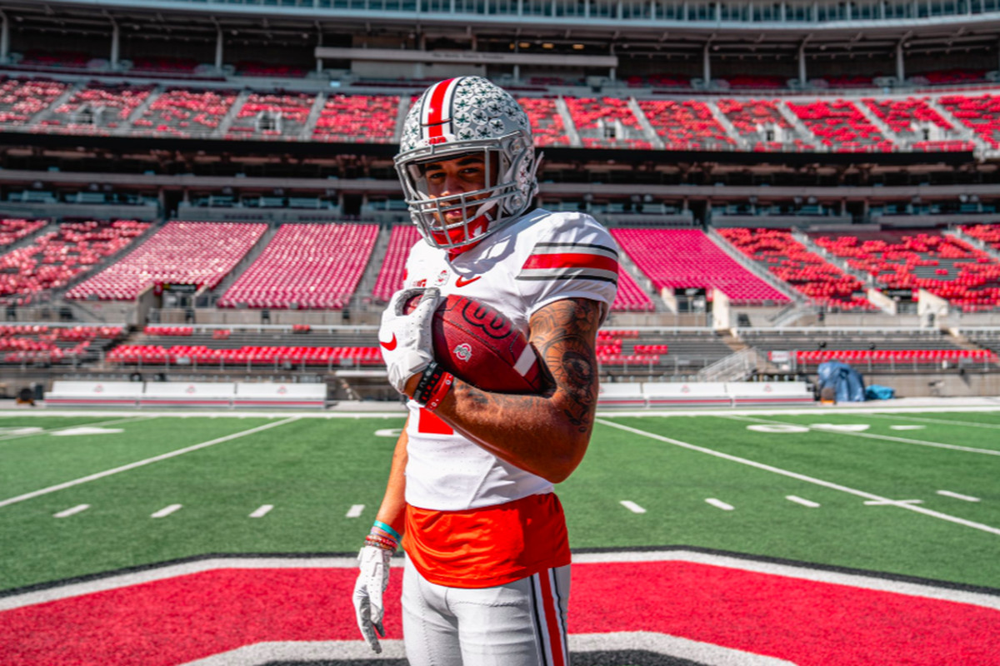
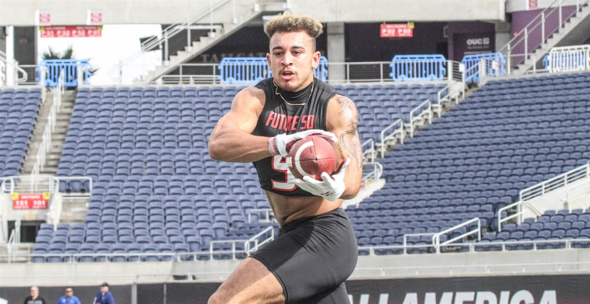
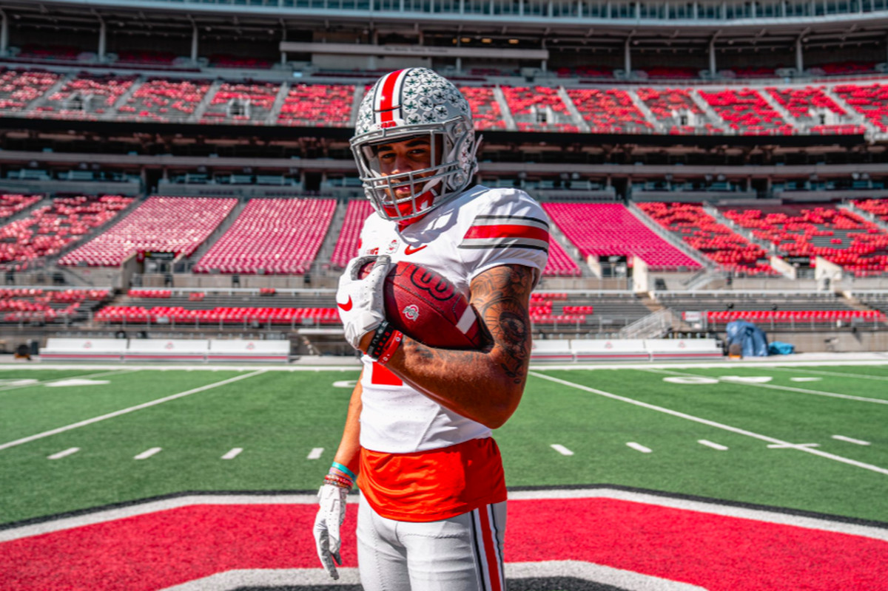
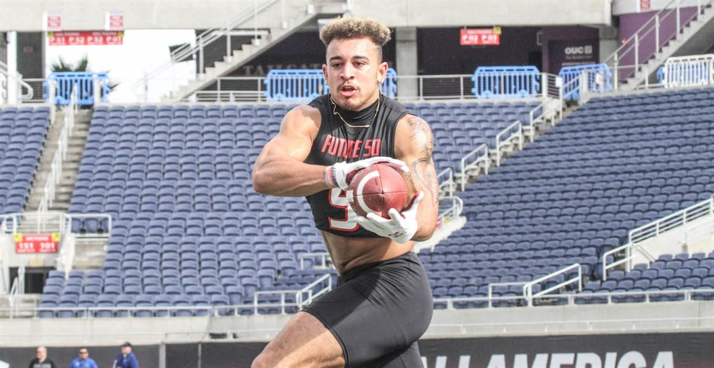

Julian Fleming
 


Attends Southern Columbia High School in Catawissa, Pennsylvania.
⭐⭐⭐⭐⭐
#1 Nationally ranked WR / #3 Overall
6-2 200 Lbs
Julian Fleming is a freak athlete. He runs a 4.45 40-Yard dash and has a 40.00 inch vertical. His hands and skill are unmatched in the class, especially because of his physicality. For a high caliber receiver like himself he blocks a whole lot and is a team player. He is compared to Michael Thomas. (247 Sports)